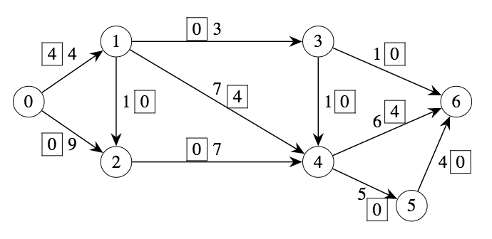
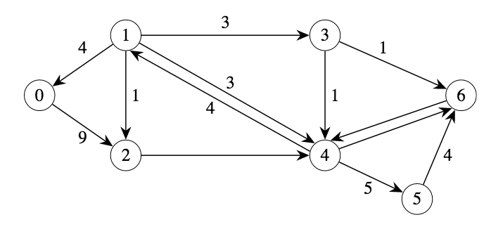
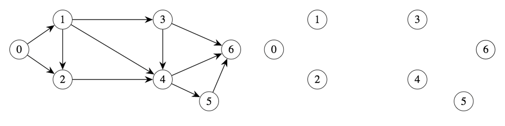

3.4. Algorithms#
We will now outline an algorithm that essentially follows the basic ideas that we have just implemented on the previous example. This algorithm will take a given feasible flow \(f\) and either finds a new feasible flow of greater value or else proves that the current flow is optimal. The key element of this algorithm is something called the residual graph, which is constructed anew for each current feasible flow \(f\).
Residual graph: \(G_f = (V,E_f)\) (for current flow \(f\))
As indicated above, the node set is \(V\), the same as for the input \(G\).
For each arc \((v,w) \in E\) such that \(f(v,w) < u(v,w)\) put \((v,w)\) in \(E_f\) with residual capacity equal to \(u(v,w) - f(v,w)\) (How much can flow on \((v,w)\) be increased?)
For each \((v,w) \in E\) with \(f(v,w) > 0\) put \((w,v) \in E_f\) (not \((v,w)\)!) with residual capacity equal to \(f(v,w)\) (How much can flow on \((v,w)\) be decreased?)
The arcs added in step 2 are called forward arcs since they correspond to moving the flow forward on real arcs of the input; on the other hand, the arcs added in step 3 are called backward arcs since flow moving on one of these corresponds to flow moving backwards on an arc of the input.
Example (cont.)#
We pick up from the following graph.
{kind=link}
Below is a partial residual graph.
{kind=link}
Q: What are the residual capacities for arcs (2,4), (4,6), and (6,4)?
Q: Why is there no arc from 0 to 1 in the residual graph?
Ford-Fulkerson#
If there is a path from \(s\) to \(t\) in \(G_f\), then \(f\) is not optimal; we will indicate in the algorithm how this path, called the augmenting path, can be used to generate a better feasible flow.
If there is no path from \(s\) to \(t\) in \(G_f\), let \(S\) be the set of nodes in \(V\) for which there is a path from \(s\) (and \(T\) corresponds to the restof the nodes, \(V\setminus S\)). Then we claim that \((S,T)\) is a cut of capacity equal to the value of flow \(f\). We next show why this is true. First, we know that for each arc \((v,w) \in D(S,T)\), it must be the case that \(f(v,w)=u(v,w)\). The reason for this is easy: if \(f(v,w)\) was less than \(u(v,w)\), then \((v,w)\) would be an arc in the residual graph; if \(v \in S\), then there is a path from \(s\) to \(v\) in \(G_f\), so there must be a path from \(s\) to \(w\) in \(G_f\) too, making \(w \in S\). But this is a contradiction, and hence \(f(v,w)=u(v,w)\). Similarly, it must be the case that for each arc \((w,v)\) such that \(w \in T\) and \(v \in S\), \(f(w,v)=0\). Otherwise, there would be a backwards arc \((v,w)\) in \(G_f\), and since \(v \in S\), \(w\) must be in \(S\) too, which is a contradiction. The capacity of the cut is therefore equal to the total flow from nodes in \(S\) to nodes in \(T\) minus the total flow from nodes in \(T\) to nodes in \(S\). The only place that flow “can end up” is the sink, and thus we can argue that the previous quantity is just the value of this flow \(f\). The capacity of the cut \((S,T)\) is equal to the value of the flow \(f\).
Now we can give the steps of the algorithm that either improves a given feasible flow \(f\) or else proves that it is optimal.
Build the residual graph \(G_f\).
Compute the set of nodes that are reachable from \(s\) by a path in \(G_f\).
If \(t \in S\), then we have found a path from \(s\) to \(t\) in \(G_f\). Compute the minimum residual capacity of the arcs in this path; call this value \(\delta\).
- For each forward arc $(v,w)$ in path, increase flow on $(v,w)$ by $\delta$.
- For each backward arc $(w,v)$ in path, decrease flow on $(v,w)$ by $\delta$.
If \(t \notin S\), then \((S,V\setminus S)\) is a cut that proves the optimality of \(f\).
There are two remaining questions.
1. How is step 2 done?
We will provide a so-called labeling algorithm that computes the set of nodes in a graph that are reachable from a specified source node \(s\). (This is just a simplified version of Dijkstra’s algorithm.) In the course of its execution, the algorithm marks certain nodes with a \(\surd\). Furthermore, the algorithm maintains a list of checked nodes that it still needs to process.
Labeling algorithm
Mark \(s\) with a \(\surd\). Let the list initially contain only node \(s\).
Until the list is empty:
Take any node (e.g., the first one) off of the list. Suppose that \(v\) is the name of this node. For each arc leaving \(v\), that is, each \((v,w) \in E_f\), if \(w\) is unchecked, check it and add it to the list.
The nodes that have been checked are those nodes that are reachable from \(s\) by a path in \(G_f\).
This can be easily implemented. Try to see what happens when you run this algorithm on the last example.
2. How do we compute an optimal flow from scratch?
Up until now, we have focused on the problem: given a feasible flow \(f\), decide if it is optimal, and if not, find a better feasible flow. But now, how do we find an optimal flow without any given feasible flow? There is a simple fix for this; the flow in which each arc has flow value equal to 0 is feasible, so we can always start with this one. Then we can apply the algorithm given above until we have a feasible flow that cannot be improved, which is a maximum flow.
This algorithm was discovered by Ford and Fulkerson and is usually called the Ford-Fulkerson algorithm.
Q: Can you write out the entire Ford-Fulkerson algorithm?
Note
The Ford-Fulkerson algorithm computes both the maximum flow and a cut of minimum capacity. While the application that we started with was formulated as a maximum flow problem, there are also many applications in which the primary aim is computing a so-called minimum cut instead. The fact that the capacity of the minimum cut is always equal to the value of the maximum flow is called the max-flow min-cut theorem.
Q: Use the blank graphs below to finish the algorithm for the example problem. At each step, pick a path from 0 to 6 in the residual graph (start with the one above), determine how much flow you can push through this path, write the new flow on the arcs of the graph on the left, and draw the corresponding residual graph on the right.
{kind=link}
Q: What is the value of the optimal flow? Did you use any reverse arcs to improve the flow?
Q: Take a look at the last residual graph. Why did you stop? Which nodes can be reached by a directed path from the source in the residual graph?
Q: Draw a cut in the last graph on the left separating those nodes that are reachable from 0 and those that are not.
Q: Add up the capacities on the arcs that cross the cut from the “source-side” to the “sink-side” (in the original graph). How does this value compare with the maximum flow? What can you now conclude about the flow you found? Give a short explanation.
Integrality Property#
There is one final observation that should be made about the Ford-Fulkerson algorithm. Suppose that the input has capacities that are all integers; i.e., \(u(v,w)\) is an integer, for each \((v,w) \in E\). Then it is easy to see that the algorithm always produces an optimal solution in which each flow value \(f(v,w)\) is also an integer. This property is very important and is called the integrality property.
This integrality property is extremely useful in formulating other problems as a maximum flow problem, where the original problem is one that you would not have suspected that it has anything to do with flow in a network. We will give two examples; one is quite simple, and one is quite involved.